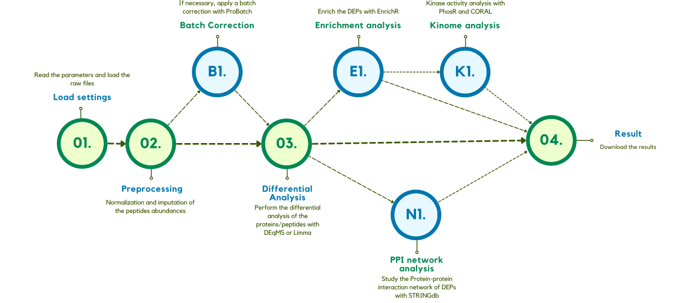
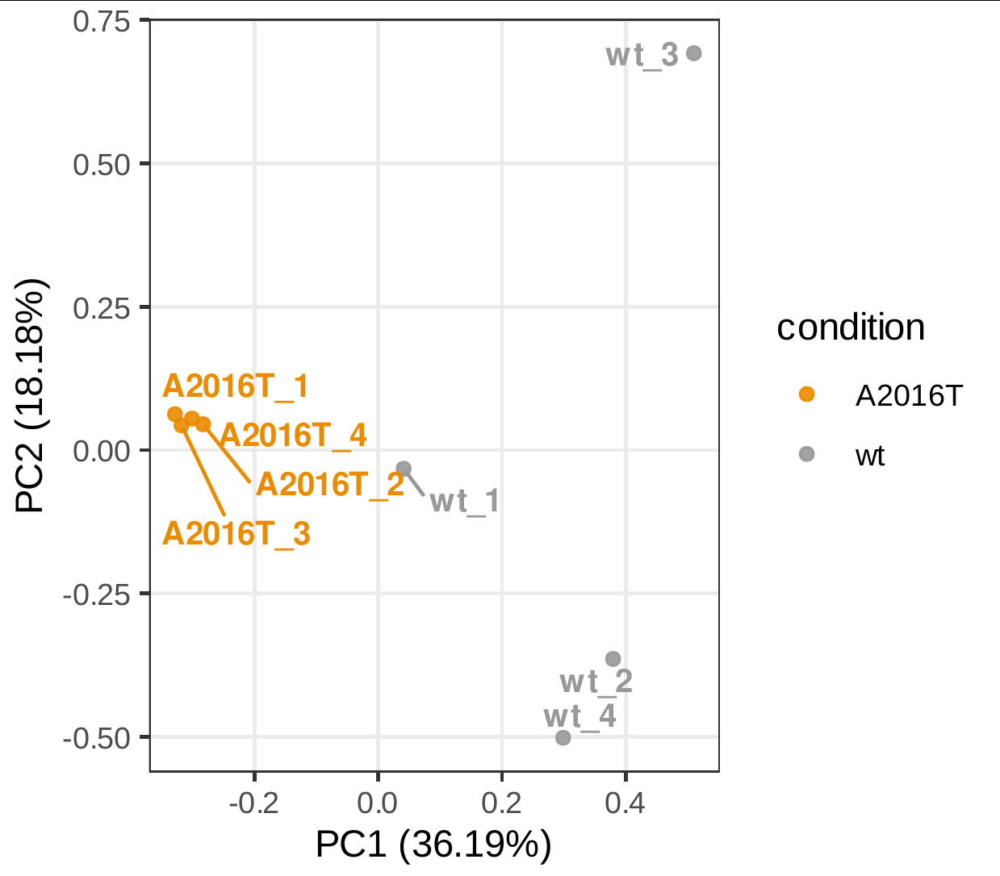
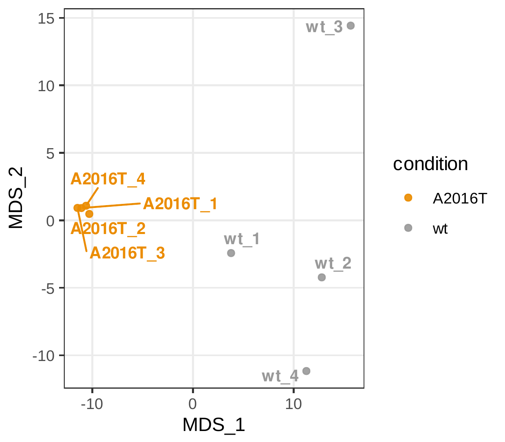
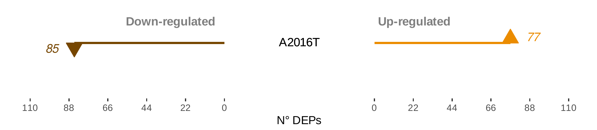
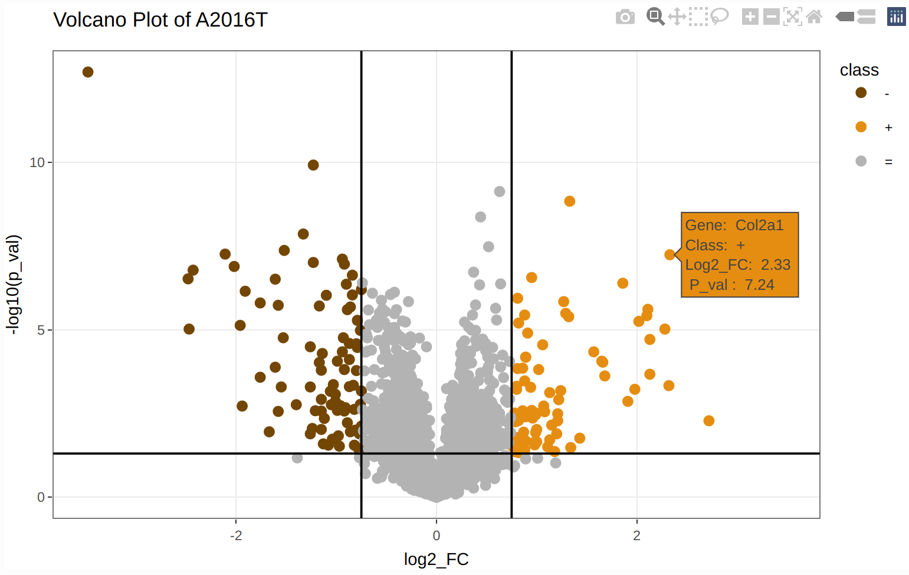
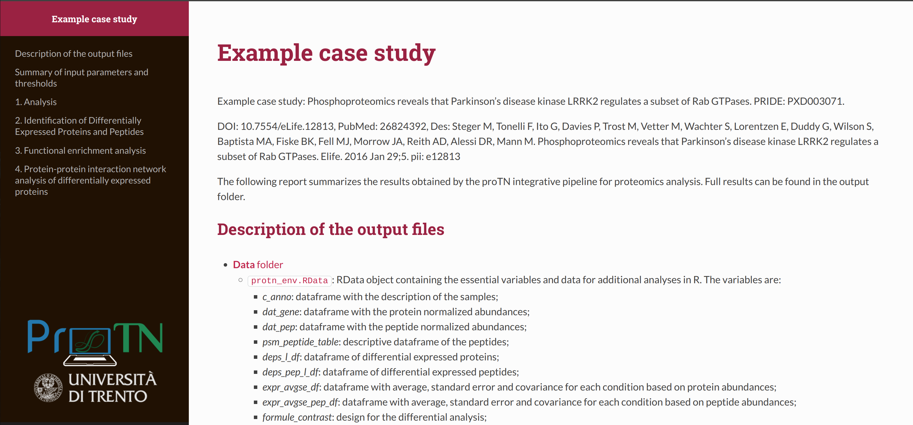

-
1. Workflow of PhosProTN
The ProTN workflow is divided into preprocessing, differential analysis and biological interpretation. During preprocessing, input data are filtered, imputed, normalized, and optionally batch-corrected. Next, differential analysis is performed in parallel at peptide and protein resolution, based on users’ defined comparisons and considering compled designs. Finally, biological interpretation of differentially expressed proteins is performed, including functional enrichment analysis, and detection of communities in protein-protein interaction networks, and kinome tree perturbation analysis.
01. Define analysis settings and load input data files
PhosProTN analyse the results of Proteome Discoverer and MaxQuant. The parameters and files required to run PhosProTN are described in section 2. Details on the input parameters and files.
-
Analysis title: title of the experiment. It will be the title of the web page report. -
Identification software: determine with software was use to identify peptides and proteins. PD for Protein Discoverer, MQ for MaxQuant. -
Design for the comparison file: Excel file containing the formulas of the contrast comparison you want to analyse. The table can have 3 columns:
- Formule column (
REQUIRED): The formulas need to follow the syntax of Limma.AT LEAST 1 FORMULA IS REQUIRED. - Name column (
OPTIONAL): personalized name assign to the comparison. - Color columns (
OPTIONAL): define a color for the condition in the graphs. If not present use the default palette.
- Formule column (
- Required for Proteome Discoverer:
-
PROTEOMIC files:
-
Sample Annotation file: file with the information about the samples and the correlation between replicate ID and condition of the proteomic (WARNING: Condition name MUST contain at least 1 character!). The Sample_Annotation file is an Excel file with the following column:- Condition column (
REQUIRED): define the condition of each sample that divide the samples in groups. The conditions need to be the same of the the Contrast Design and the same of the phospho-proteomics. (WARNING: Condition name MUST contain at least 1 character!) - Color columns (
OPTIONAL): define a color for the samples in the graphs. If not present use a default palette. - MS_batch columns: define the groups of batch in the
samples.
REQUIRED FOR BATCH EFFECT CORRECTION. - Sample column: define the names for the samples. In case of PD files use the Sample_Annotation file obtained from PD, the Sample column in optional, if is not present the software extract the names for the File Name column.
- Condition column (
-
Peptides file: raw file of peptides. -
Proteins file: raw file of protein groups.
-
-
PHOSPHO-PROTEOMIC files:
-
Sample Annotation file: file with the information about the samples and the correlation between replicate ID and condition of the phospho-proteomics (WARNING: Condition name MUST contain at least 1 character!). The Sample_Annotation file is an Excel file with the following column:- Condition column (
REQUIRED): define the condition of each sample that divide the samples in groups. The conditions need to be the same of the the Contrast Design and the same of the proteomics. (WARNING: Condition name MUST contain at least 1 character!) - Color columns (
OPTIONAL): define a color for the samples in the graphs. If not present use a default palette. - MS_batch columns: define the groups of batch in the
samples.
REQUIRED FOR BATCH EFFECT CORRECTION. - Sample column: define the names for the samples. In case of PD files use the Sample_Annotation file obtained from PD, the Sample column in optional, if is not present the software extract the names for the File Name column.
- Condition column (
-
Peptides file: raw file of peptides. -
Proteins file: raw file of protein groups. -
PSM file: raw file of the PSM obtained from PD. It is required to overcome the uncertain phosphorilation site identification.
-
-
- File Required for MaxQuant:
-
PROTEOMIC files:
-
Sample Annotation file: file with the information about the samples and the correlation between replicate ID and condition of the proteomic (WARNING: Condition name MUST contain at least 1 character!). The Sample_Annotation file is an Excel file with the following column:- Condition column (
REQUIRED): define the condition of each sample that divide the samples in groups. The conditions need to be the same of the the Contrast Design and the same of the phospho-proteomics. (WARNING: Condition name MUST contain at least 1 character!) - Sample column (
REQUIRED): define the names for the samples. - Color columns (
OPTIONAL): define a color for the samples in the graphs. If not present use a default palette. - MS_batch columns: define the groups of batch in the
samples.
REQUIRED FOR BATCH EFFECT CORRECTION.
ATTENTION: SAMPLE NAME MUST BE EQUAL TO THE NAME INSERTED IN MAXQUANT (name of the column in peptide file). - Condition column (
-
Evidence file: raw file of peptides. The file required is the evidence.txt file.
-
-
PHOSPHO-PROTEOMIC files:
-
Sample Annotation file: file with the information about the samples and the correlation between replicate ID and condition of the phospho-proteomics (WARNING: Condition name MUST contain at least 1 character!). The Sample_Annotation file is an Excel file with the following column:- Condition column (
REQUIRED): define the condition of each sample that divide the samples in groups. The conditions need to be the same of the the Contrast Design and the same of the proteomics. (WARNING: Condition name MUST contain at least 1 character!) - Sample column (
REQUIRED): define the names for the samples. - Color columns (
OPTIONAL): define a color for the samples in the graphs. If not present use a default palette. - MS_batch columns: define the groups of batch in the
samples.
REQUIRED FOR BATCH EFFECT CORRECTION.
ATTENTION: SAMPLE NAME MUST BE EQUAL TO THE NAME INSERTED IN MAXQUANT (name of the column in peptide file). - Condition column (
-
Evidence file: raw file of peptides. The file required is the evidence.txt file.
-
-
02. Normalization and imputation of the intensities
Intensities are log2 transformed and normalized with DEqMS (Zhu 2022). At the peptide level, the normalization is performed with the function equalMedianNormalization, which normalizes intensity distributions in samples so that they have median equal to 0.
At the protein level, this operation is executed by the function medianSweeping, that applies the same median normalization used for peptides, but also summarizes peptide intensities into protein relative abundances by the median sweeping method.
The principal method is based on the PhosR package (Kim et al. 2021) that performs a complex and well-balanced imputation of the data based on the association between replicates and conditions. As a backup method, ProTN uses a Gaussian round imputation, for condition with only 1 replicate.
 03. Differential analysis
Differential analysis is applied to both proteins and peptides, to identify significant differences. Two slightly different methodologies are applied: the DEqMS package (Zhu 2022),is used for proteins. DEqMS is developed on top of Limma, but the method estimates different prior variances for proteins quantified by different numbers of PSMs/peptides per protein, therefore achieving better accuracy.For single peptides, the Limma package is used (Ritchie et al. 2015).
Limma and DEqMS calculate differentially expressed peptides and proteins (DEPs) for each comparison specified in the design file parameter. Each peptide or protein can be selected as differential based on different parameters: the log2 Fold Change, the P.Value, the adjusted P.Value and the log2 expression. In ProTN, a protein/peptide is significant if passing thresholds on these parameters, set by the user. A protein/peptide for each comparison can be Up-regulated or Down-regulated. It is Up-regulated if:
-
the log2 FC is higher than the Fold Change threshold (FC > Log2 FC thr),
-
the Adj.P.Value or P.Value is lower than the threshold (P.Value < P.Value thr),
-
the log2 expression is higher than the threshold (log2 expression > Signal log2 expr thr).
It is Down-regulated if:
-
the log2 FC is lower of the Fold Change threshold (FC < -Log2 FC thr),
-
the Adj.P.Value or P.Value is lower than the threshold (P.Value < P.Value thr),
-
the log2 expression is higher than the threshold (log2 expression > Signal log2 expr thr).
In the output, for each comparison, this distinction is reported in the “class” column, which assumes value “+” if is up-regulated, “-” if down-regulated and “=” if it is not significant.
Various figures are generated, first a bar plot that graphically represents the DEPs identified. Followed by comparison-specific volcano plots.
 04. Report creation and download of the results
The results are summarized in a web-page HTML report. Other than this, the experiment is described by a large number of files, a description of each file generated can be found in section 3. Details on the output files. All the files are group in a zip file and downloaded.
ADDITIONAL STEPS:
B1. Batch Effect correction
If required by the experiment, a batch correction step can be applyed using proBatch (Cuklina et al. 2018). The batches need to be defined in the Sample_Annotation file where column MS_batch is required.
E1. Enrichment analysis of the Differentially Expressed Proteins
The biological interpretation of the Differentially Expressed Proteins starts with the enrichment step. To execute this analysis, ProTN uses EnrichR (Jawaid 2022), a popular tool that searches on a large number of data sets to obtain information about many functional categories. EnrichR organises its hundreds of data sources in 8 sections: Transcription, Pathways, Ontologies, Diseases/Drugs, Cell Types, Misc, Legacy, and Crowd.
Each comparison defined in the differential analysis stage can result in 3 sets of proteins: the Up-regulated (called Up), the Down-regulated (called Down), and the merge of the two (called all). ProTN provides for each term statistical parameters like P.Value, fdr, odds ratio, overlap size.
ProTN creates an RData of the complete enrichment data frame, allowing the user an easy import in R to perform further analysis. ProTN also generates an Excel file, containing only the significantly enriched terms, as defined by user settings.
A term to be significative need to have:
-
a Fdr or P.Value lower of P.Value thr for enrichment (P.Value < P.Value thr for enrichment),
-
an Overlap Size higher than Overlap size thr for enrichment (Overlap Size > Overlap size thr for enrichment).
ProTN displays top significant enrichments based on specific annotation datasets or keywords selected by the user.

E1.1. Enrichment analysis of the whole set of proteins discovered by the experiment
In same cases can be usefull have the enrichment of the whole proteome discovered by the experiment. For example it can be used as negative control of the differentially expressed proteins. So, the entire proteome is analysed with EnrichR, and saved in an RData and in an Excel file. Also, as before, 4 plots can be generated, in this case adding as last dot column the negative control provided by the whole proteome.
Additional details on the output can be found in section 4. Details on the output files.
K1. Activity kinase tree analysis of the Differentially Expressed Phosphosite
In phospho-proteomic it extremely useful to study the activation status of the kinase based on the differentially expressed substrate idenfied by the differential analysis. For each comparison, PhosProTN predicts the activation state of the kinases using PhosR (Kim et al. 2021). PhosR provides a kinase-substrate relationship score, and on that it prioritises potential kinases that could be responsible for the phosphorylation change of phosphosite on the basis of kinase recognition motif and phosphoproteomic dynamics.
The activity score provide by PhosR is used to generated a graphical versione of the human kinome tree using CORAL (Metz K.S. et al. 2018), a web shiny app for visualizing both quantitative and qualitative data. It generates high-resolution scalable vector graphic files suitable for publication without the need for refinement in graphic editing software.
N1. Protein-Protein Interaction network analysis of Differentially Expressed Phosphosite
ProTN performs Protein-Protein Interaction (PPI) network analysis on differentially expressed proteins. PPIs are essential in almost all processes of the cell, and crucial for understanding cell physiology in different states. For each comparison, ProTN analyses the interaction between the DEPs using STRING (Szklarczyk et al. 2021).

The species-specific database is retrieved from STRING server, an accurate analysis discover all the interactions and an iGraph (Csardi and Nepusz 2006) network is generated. Later, the proteins are clustered via iGraph function which identify dense subgraph by optimizing modularity score.
Since the network can vary a lot on composition, two ggplot layout are used: Fruchterman-Reingold algorithm and the Kamada-Kawai algorithm.

-